This gallery illustrates how to customize Kaplan–Meier survival
curves and Aalen–Johansen cumulative incidence curves with
cifplot() and cifpanel(). Each example focuses
on selected display options. For a full analysis workflow, see Worked examples; for tables and reports, see
Reporting results.
Using this gallery. The figures are saved images; their code chunks are not executed when the vignette is built. To reproduce a figure, run the setup chunk and its example in R. Some examples reuse objects created earlier. Interpret the tails of curves cautiously when few observations remain at risk; check the risk table before drawing conclusions about late changes.
library(cifmodeling)
data("diabetes.complications", package = "cifmodeling")
gallery_data <- diabetes.complications
# Survival endpoint: first occurrence of either complication
gallery_data$d <- as.integer(gallery_data$epsilon > 0)
# Two fruit-intake groups for most figures
gallery_data$fruitq1 <- ifelse(
gallery_data$fruitq == "Q1", "Q1", "Q2 to Q4"
)
set.seed(1)In this dataset, epsilon = 1 denotes diabetic
retinopathy, epsilon = 2 denotes a macrovascular
complication, and epsilon = 0 denotes censoring. For
survival plots, d = 1 indicates the first occurrence of
either complication. Unless noted otherwise, competing-risk
plots show the event-1 CIF.
1. Start with the default curves
With outcome.type = "survival", cifplot()
displays Kaplan–Meier survival probabilities, including a risk table and
censoring marks by default.
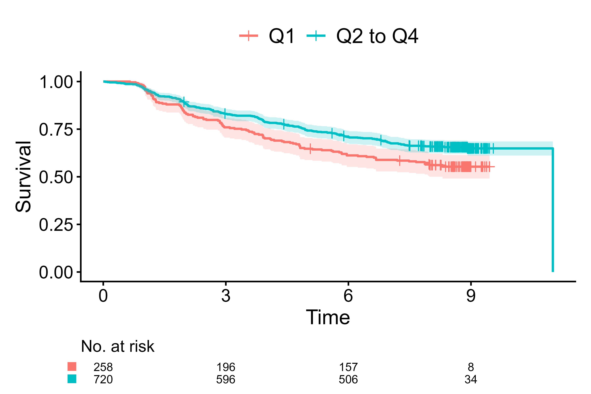
With outcome.type = "competing-risk",
cifplot() instead displays the cumulative
incidence of the selected event.
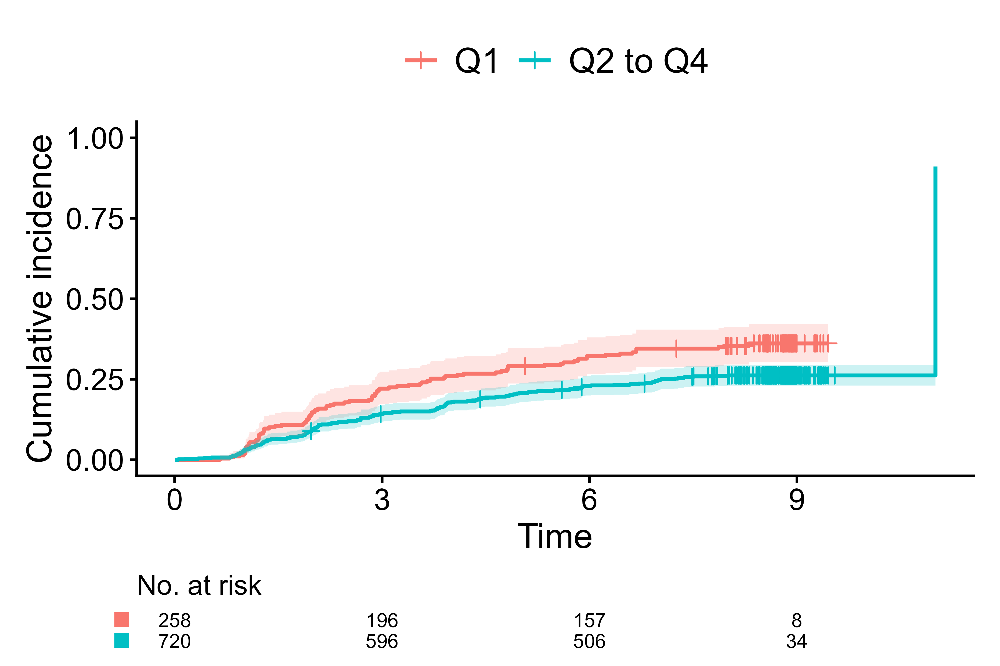
2. Show or hide information in the plot
Set the following three options to FALSE to hide the
shaded pointwise confidence-interval ribbons, the risk table, and
censoring marks. This simplifies the display but removes information
about uncertainty and follow-up.
cifplot(Event(t,epsilon) ~ fruitq1,
data = gallery_data,
outcome.type = "competing-risk",
add.conf = FALSE,
add.risktable = FALSE,
add.censor.mark = FALSE)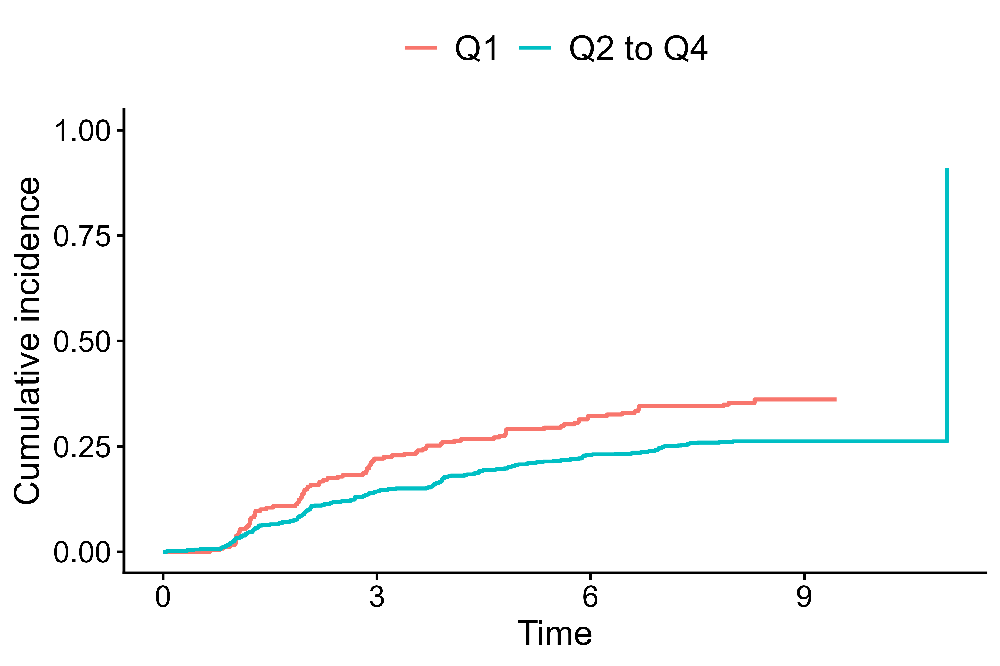
Use add.estimate.table = TRUE to show CIF estimates and
confidence intervals at selected times. Set
add.competing.risk.mark = TRUE to mark competing events on
the event-1 plot.
cifplot(Event(t,epsilon) ~ fruitq1,
data = gallery_data,
outcome.type = "competing-risk",
add.risktable = FALSE,
add.estimate.table = TRUE,
add.censor.mark = FALSE,
add.competing.risk.mark = TRUE)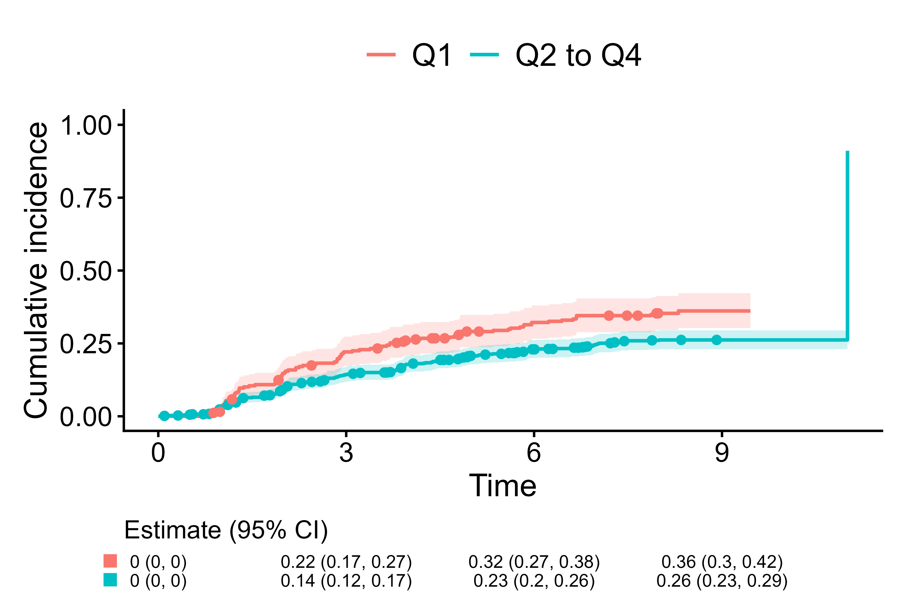
Alternatively, extract_time_to_event() returns event-2
times as a named list. Pass that list to
competing.risk.time when event times are prepared
separately. With this dataset, the displayed figure is the same as in
the preceding example.
# Extract event-2 time from data frame
time_to_event <- extract_time_to_event(Event(t, epsilon) ~ fruitq1,
data = gallery_data,
which.event = "event2")
# Ensure named list by strata
stopifnot(is.list(time_to_event), length(time_to_event) > 0)
# Add event-2 time marks using external event-2 time
cifplot(Event(t, epsilon) ~ fruitq1,
data = gallery_data,
outcome.type = "competing-risk",
add.risktable = FALSE,
add.estimate.table = TRUE,
add.censor.mark = FALSE,
add.competing.risk.mark = TRUE,
competing.risk.time = time_to_event)The next example changes the competing-event marks to larger open
circles. Although add.risktable = FALSE hides the
number-at-risk table, add.estimate.table = TRUE keeps the
estimate table visible. symbol.risk.table = "circle" adds
group symbols to that estimate table.
cifplot(Event(t, epsilon) ~ fruitq1,
data = gallery_data,
outcome.type = "competing-risk",
add.risktable = FALSE,
add.estimate.table = TRUE,
symbol.risk.table = "circle",
add.censor.mark = FALSE,
add.competing.risk.mark = TRUE,
shape.competing.risk.mark = 1,
size.competing.risk.mark = 4,
competing.risk.time = time_to_event)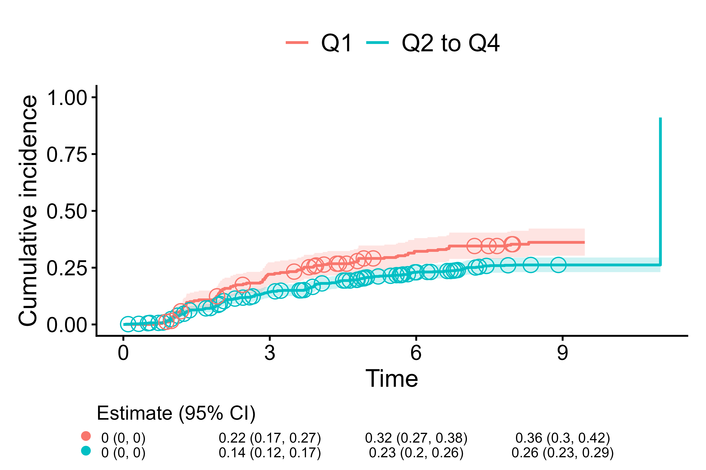
3. Annotate an estimated effect
effect_label.polyreg() formats an estimate from
polyreg() for use as a plot annotation. Add it with
ggplot2::annotate(). Here the eight-year RR compares Q2–Q4
with Q1 as the reference group—the reverse comparison
of the Q1-versus-Q2–Q4 RRs in Direct
polytomous regression and Worked
examples. For the same event, time, and population, reversing the
comparison gives the reciprocal RR. The annotation comes from the fitted
regression model, not from visual inspection of the
curves.
# Fit direct polytomous regression
output1 <- polyreg(nuisance.model=Event(t,epsilon)~1, exposure="fruitq1", code.exposure.ref="Q1",
data=gallery_data, effect.measure1="RR", effect.measure2="RR",
time.point=8, outcome.type="competing-risk")
# Create a label of the risk ratio of event1
output2 <- effect_label.polyreg(output1,
event="event1",
add.exposure.levels=FALSE,
add.outcome=FALSE,
add.conf=FALSE)
output3 <- cifplot(Event(t,epsilon) ~ fruitq1,
data = gallery_data,
outcome.type = "competing-risk")
# Add the label
output4 <- output3$plot + ggplot2::annotate("text", x=6, y=0.8,
label=output2, hjust=1, vjust=1)
print(output4)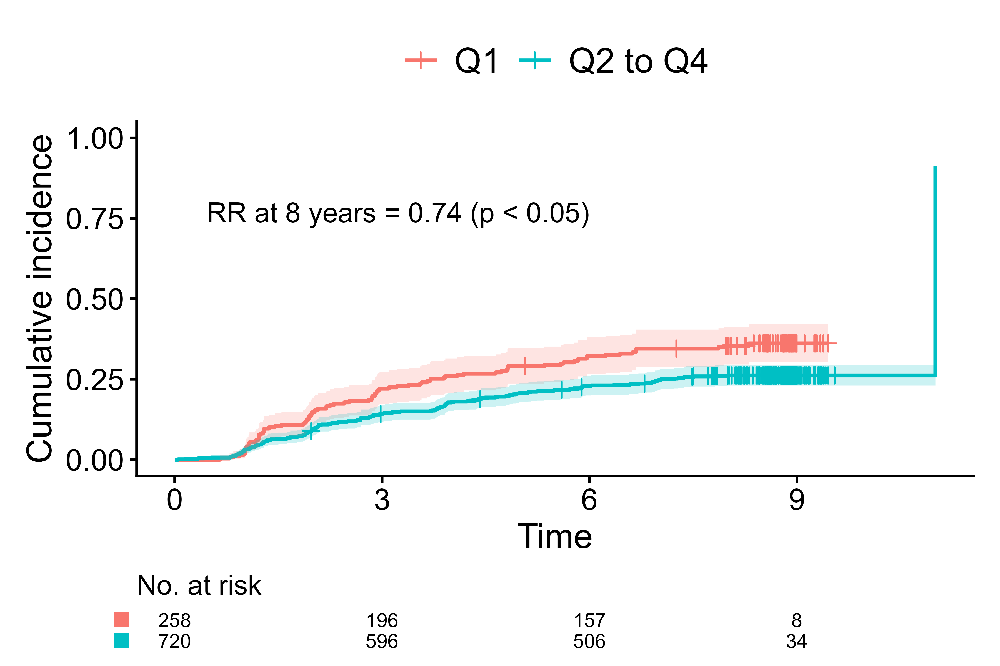
4. Arrange multiple panels
With panel.per.variable = TRUE, cifplot()
creates a panel for each grouping variable in the formula.
cifplot(Event(t,epsilon) ~ fruitq + fruitq1,
data = gallery_data,
outcome.type = "competing-risk",
panel.per.variable = TRUE)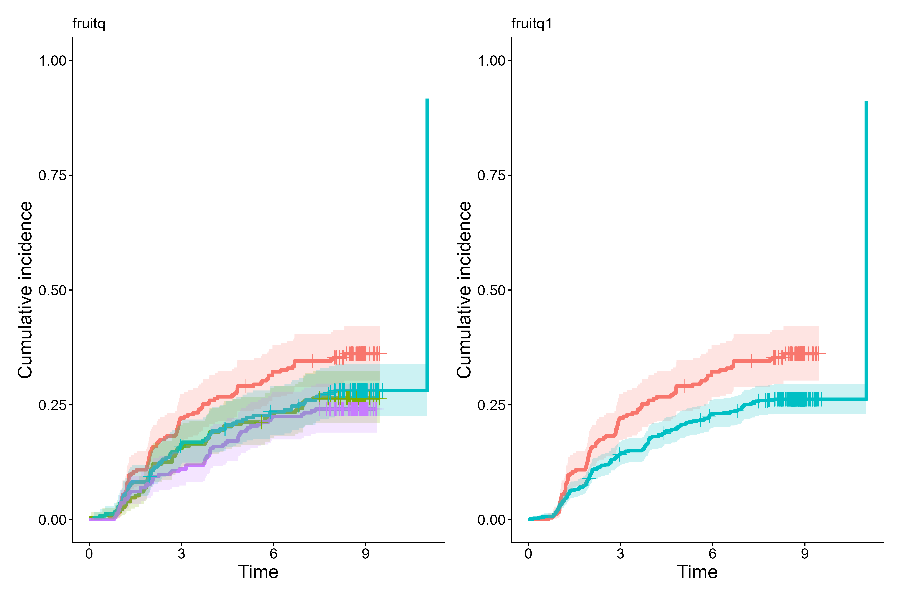
With panel.per.event = TRUE, cifplot()
displays each competing event in a separate panel.
cifplot(Event(t,epsilon) ~ fruitq1,
data = gallery_data,
outcome.type = "competing-risk",
panel.per.event = TRUE)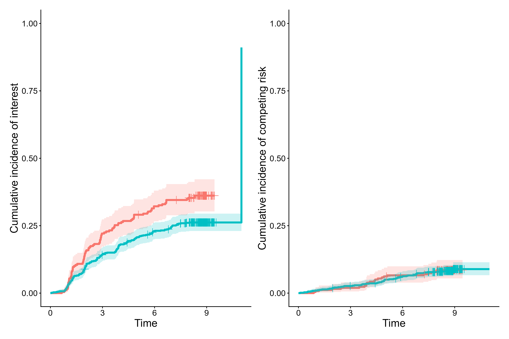
For survival outcomes, panel.censoring = TRUE adds the
censoring distribution alongside the event-free survival curves.
cifplot(Event(t,d) ~ fruitq1,
data = gallery_data,
outcome.type = "survival",
panel.censoring = TRUE)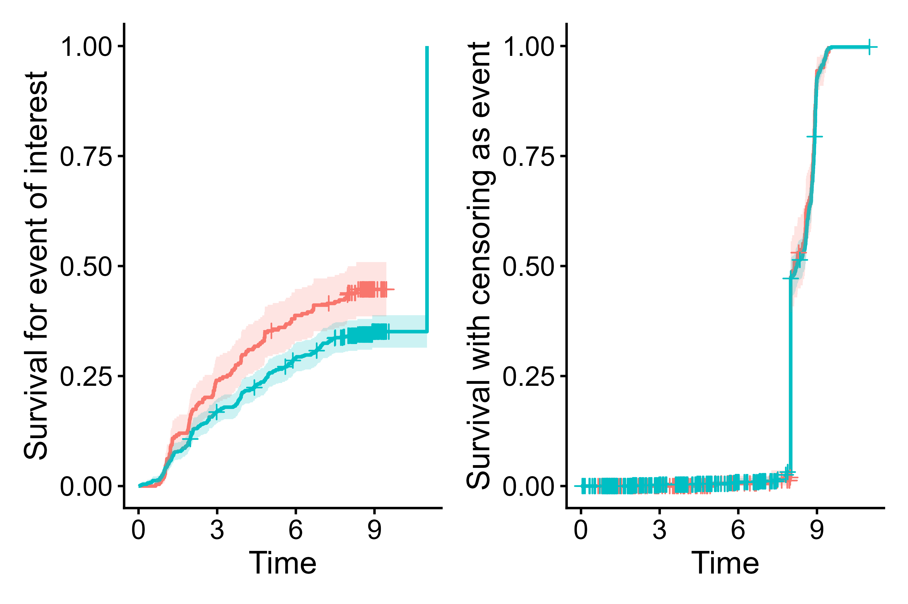
5. Add a zoomed-in view
When cumulative incidence is low, a narrower vertical scale can make
differences easier to see. In cifpanel(),
inset.panel = TRUE places the zoomed view inside the main
plot. Each code.events entry specifies the event of
interest, competing event, and censoring code, in that order. Both views
below use event 2 as the event of interest.
output5 <- cifpanel(
title.plot = c("Fruit intake and macrovascular complications", "Zoomed-in view"),
inset.panel = TRUE,
formula = Event(t, epsilon) ~ fruitq,
data = diabetes.complications,
outcome.type = "competing-risk",
code.events = list(c(2,1,0), c(2,1,0)),
label.y = c("CIF of macrovascular complications", ""),
label.x = c("Years from registration", ""),
limits.y = list(c(0,1), c(0,0.15)),
inset.left = 0.40,
inset.bottom = 0.45,
inset.right = 1.00,
inset.top = 0.95,
inset.legend.position = "none",
legend.position = "bottom",
add.conf = FALSE
)
print(output5)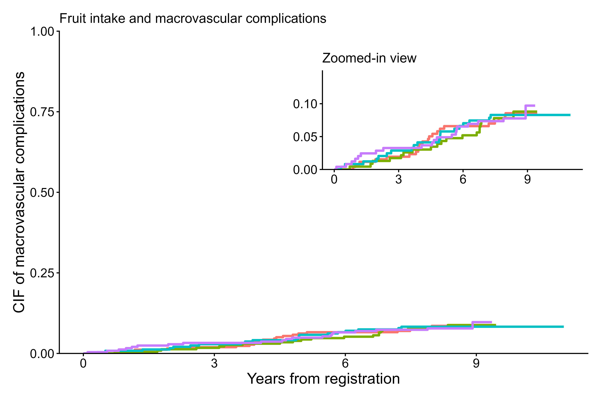
6. Customize fonts, styles, and palettes
Adjust font.size and font.size.risk.table
to change text sizes in the plot and risk table. Labels, styles, and
palettes change the presentation without changing the estimated
curves.
cifplot(Event(t,epsilon) ~ fruitq,
data = gallery_data,
outcome.type = "competing-risk",
add.conf = FALSE,
font.size = 16,
font.size.risk.table = 3)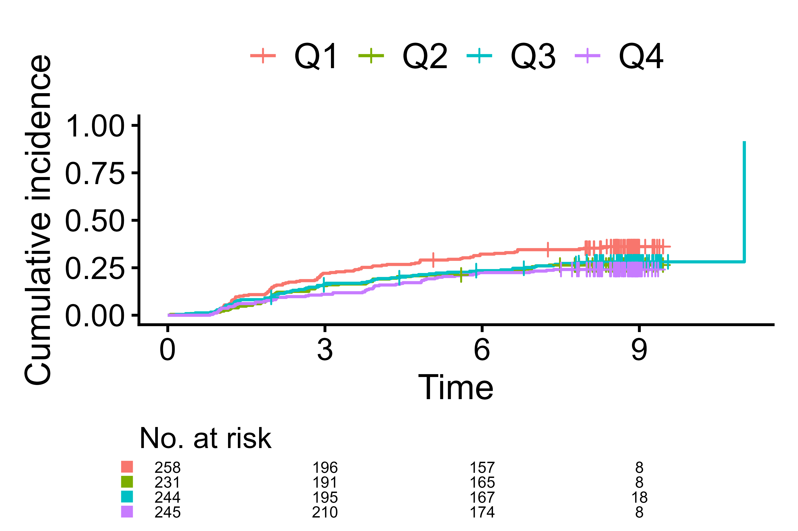
The next code block applies four built-in styles to the same four-group CIF plot. The saved figures appear in the same order.
cifplot(Event(t,epsilon) ~ fruitq,
data = gallery_data,
outcome.type = "competing-risk",
add.conf = FALSE,
style = "bold",
font.family = "serif",
palette = c("blue1", "cyan3", "navy", "deepskyblue3"))
cifplot(Event(t,epsilon) ~ fruitq,
data = gallery_data,
outcome.type = "competing-risk",
add.conf = FALSE,
style = "framed",
font.family = "serif",
linewidth = 1.3,
linetype = TRUE,
palette = c("azure4", "gray", "black", "darkgray"))
cifplot(Event(t,epsilon) ~ fruitq,
data = gallery_data,
outcome.type = "competing-risk",
add.conf = FALSE,
style = "gray",
font.family = "mono",
palette = c("cyan3", "deepskyblue4", "darkseagreen2", "deepskyblue3"))
cifplot(Event(t,epsilon) ~ fruitq,
data = gallery_data,
outcome.type = "competing-risk",
add.conf = FALSE,
style = "ggsurvfit",
font.family = "mono",
palette = c("brown", "orange", "purple", "darkgoldenrod"))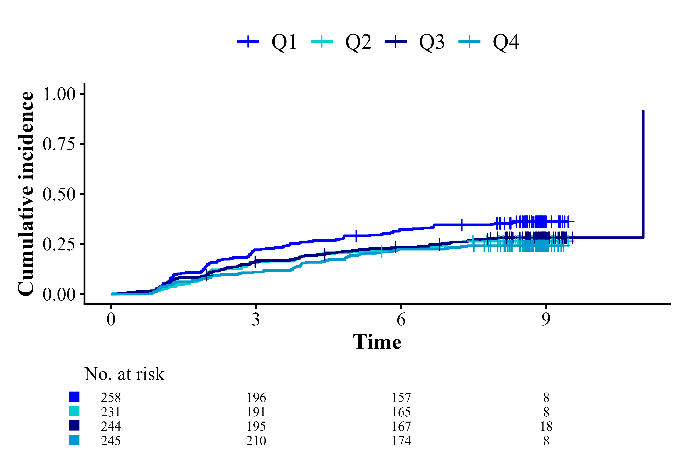
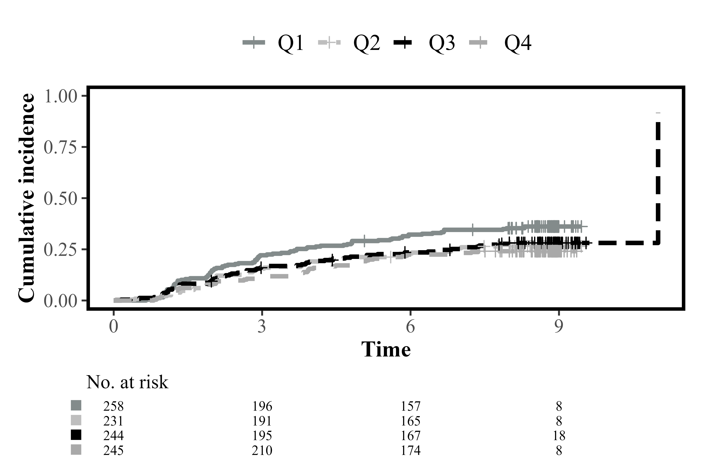
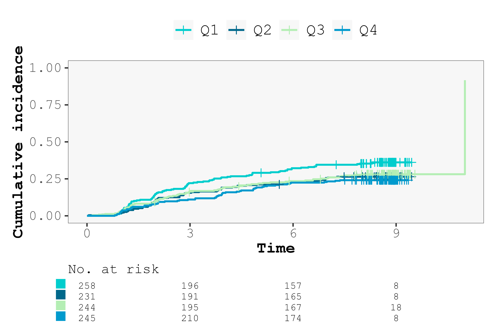
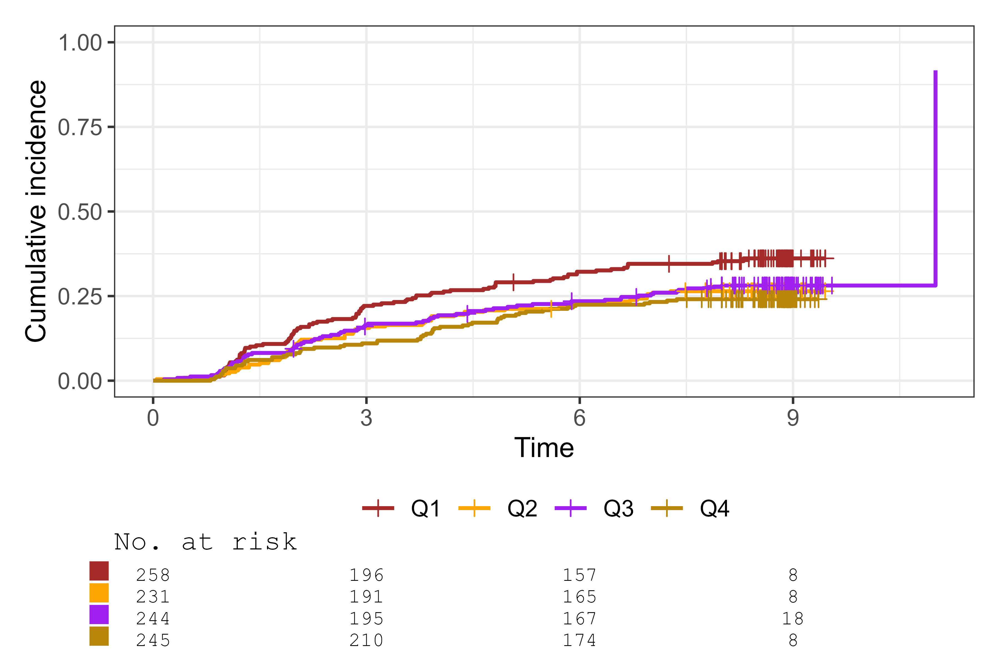
## 7. Change labels and axesUse label.strata for legend labels,
level.strata to associate those labels with group values,
and order.strata to control display order. Explicit
mappings avoid dependence on alphabetical ordering.
cifplot(Event(t,d) ~ fruitq1,
data = gallery_data,
outcome.type = "survival",
label.y = "Survival (no complications)",
label.x = "Years from registration",
label.strata = c("High intake","Low intake"),
level.strata = c("Q2 to Q4","Q1"),
order.strata = c("Q1", "Q2 to Q4"))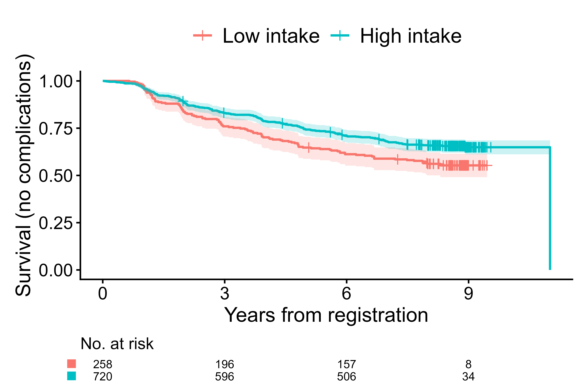
Set type.y = "risk" to show the composite-event
probability rather than event-free survival. Use the axis arguments to
set the displayed range and tick marks.
cifplot(Event(t,d) ~ fruitq1,
data = gallery_data,
outcome.type = "survival",
label.y = "Risk of diabetes complications",
label.x = "Years from registration",
label.strata = c("High intake","Low intake"),
level.strata = c("Q2 to Q4","Q1"),
order.strata = c("Q1", "Q2 to Q4"),
type.y = "risk",
limits.y = c(0, 0.5),
breaks.y = seq(0, 0.5, by=0.1),
limits.x = c(0, 8),
breaks.x = 0:8,
use.coord.cartesian = TRUE) 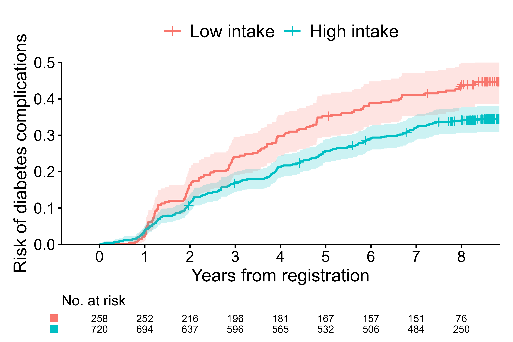
8. Use a complementary log–log scale
For survival outcomes, type.y = "cloglog" uses a
complementary log–log plotting scale, not the
conf.type = "log-log" CI transformation. Roughly parallel
curves may be consistent with proportional hazards, but this display is
not a formal test. Interpret the plot cautiously when
few subjects remain at risk.
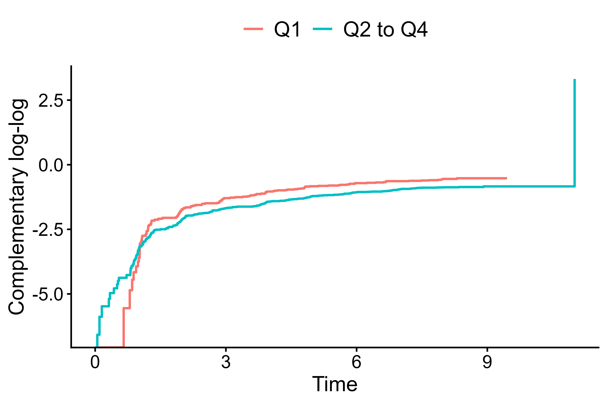
Further reading
- Worked examples shows a complete estimation–testing–regression workflow.
- Computational formulas explains estimates, standard errors, and confidence intervals.
- Reporting results shows how to create tables and reports from fitted objects.
- Function reference lists available arguments and defaults.